Dev log: what was built, what was found, what is next. Newest first. Spec: docs/SPEC.md.
It walks in the browser: the viewer and three demos, live
M0 and M1 are on main and the game is registered as mech-works (proj up mech-works). On the dev server the training viewer reads the trainer's checkpoints/ as it writes them, so the run in progress is the one on screen. Each mech below is the Rust simulation stepped in wasm with the policy run by mw_policy, 50 times a second; nothing is animated.
Training viewer
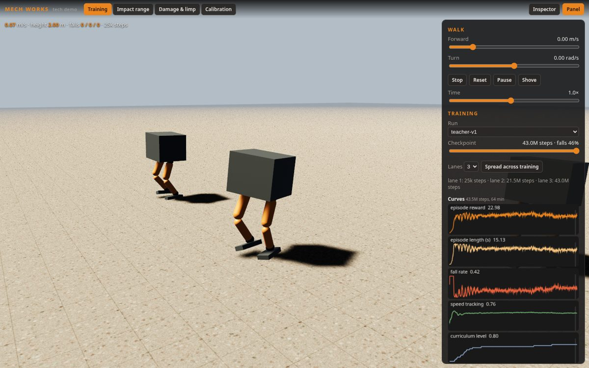
Three lanes, three checkpoints of teacher-v1 (25k, 21.5M and 43M steps) on the same ground; the curves are the run's live metrics.jsonl. The checkpoint slider scrubs through training; "Spread across training" lays the lanes from the first checkpoint to the chosen one.
Demo 1: impact range
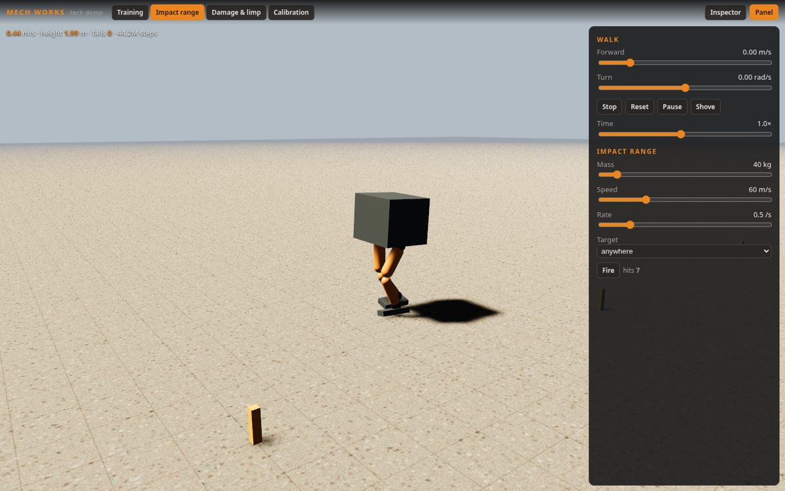
Projectiles from random directions hit random links (or the one chosen); each hit is the projectile's momentum into that link at the point struck. Seven hits at 0.44 m/s, no falls.
Demo 3: damage and limp
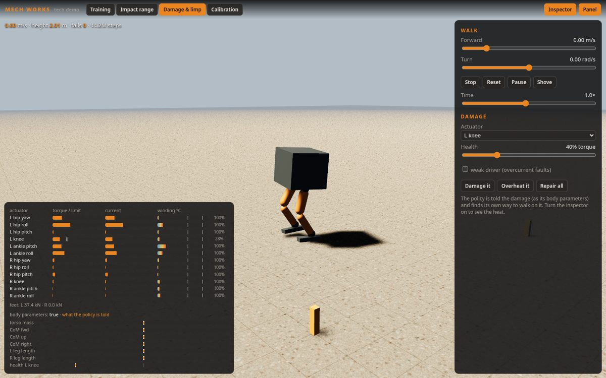
The left knee cut to 28% of its torque. The inspector shows each actuator's torque against its limit (the white tick is the damaged knee's lower limit), its current, its winding temperature against the derate and trip marks, and the body parameters the policy is told. It keeps walking at 0.6 m/s.
Demo 4: calibration
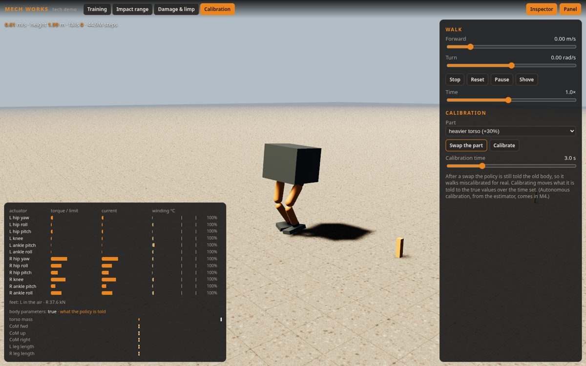
A torso 30% heavier swapped in. The policy is still told the old body (orange mark at nominal; the true mass is the white mark at +30%) until "Calibrate" moves what it is told to the truth over the time set.
Not good yet
The mech is its collision primitives, and the light is flat and too bright. The AMP-style mesh, the eroded hillside, real gravel and the lighting pass are M6.
The policy is still training. It falls in half or more of the episodes with both pushes and damage, and its curriculum moved on noisy samples. The next run smooths that and adds the estimator (M4).
No native-vs-WASM replay parity test yet (M0's last item).
The panel's sliders don't follow commands sent another way (keys, scripts).
M4: the estimator, smoother walking, visible shots, an armoured mech
Status
Piece
State
teacher-v1, 150M steps
done; final checkpoint now ships (falls 3/8 → 30/64 with pushes and damage, from 6/8)
training: teacher-v2, a fine-tune of v1 with smoothness rewards
Projectiles in the impact demo
fixed: they worked but could not be seen
The mech's look
first pass: armour, actuator drums, pistons, a cockpit
The estimator
The second half of Rapid Motor Adaptation. A per-step embedding (61 → 32) and three 1D convolutions over the last 50 policy steps (one second), then two heads: the teacher's body latent z (16, the target) and the 32 body parameters (an auxiliary guess, for the demo's bars). It trains online against the frozen teacher. For the first 2M steps the teacher drives on the true z; over the next 8M the envs hand over to the actor driving on the estimated z (DAgger), so the estimator learns from the states its own errors lead to. In Rust it keeps a ring of embedded steps and runs the convolutions each policy step: about 0.2 M multiply-adds.
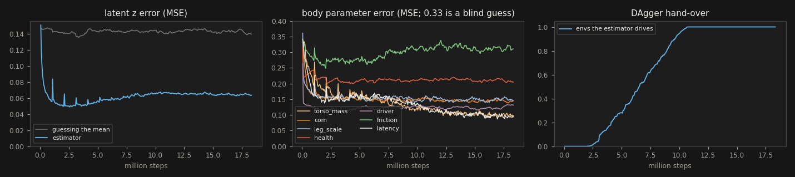
The latent error falls to a third of z's variance, then rises a little as the estimator takes over driving (its own states are harder). It reads torso mass and control latency best, then centre of mass, leg lengths and drivers. Friction is nearly unreadable: on flat ground at these speeds the feet hardly ever slip, so nothing in the motion depends on it. It stopped improving by 10M steps, and the run was stopped at 17M to free the CPUs for teacher-v2.
Finding: teacher-v1 hardly needs to be told its body
The closed-loop eval now runs each set three ways: the policy told its true body, walking on the estimator's guess, and told the nominal body whatever it really is. Sixty-four 20 s episodes each, asked 1 m/s:
Conditions
told
estimated
told nominal
nominal body
0 fell, 0.80 m/s
0 fell, 0.52 m/s
0 fell, 0.80 m/s
random bodies
4 fell, 0.59 m/s
4 fell, 0.58 m/s
5 fell, 0.64 m/s
bodies + damage
7 fell
7 fell
10 fell
bodies + pushes + damage
30 fell
32 fell
30 fell
Telling the policy the wrong body costs little: three more falls in 64 under damage, nothing measurable elsewhere. The actor does respond to its body input: switching to the nominal body moves its actions by 0.14 on average, mostly from leg lengths and centre of mass. But that response barely changes the outcome. The teacher learned one robust gait rather than a gait per body, so there is little for an estimator to recover. Pushes dominate the falls in the hardest set. Two things follow:
The calibration demo's premise (a stale body makes it stumble) is weak with this teacher: a heavier torso or a longer leg gives a small wobble, not a stumble. To make the body matter, the next teacher needs wider ranges (heavier loads, weaker actuators), which change what the normalized parameters mean, so they wait for a decision.
On a nominal body the estimator walks slow (0.52 m/s): training at curriculum level 0.95 almost never shows it the exact nominal body (zero latency is the end of its range). The next estimator run will mix in nominal episodes.
Smooth movement: teacher-v2
The policy commands a new joint target at 50 Hz, and stiff ankle PD loops turn a target that flips each step into the foot wiggle the owner saw. Under teacher-v1 the joints' RMS acceleration was about 47 rad/s². Three reward terms now cost it: the action rate (weight raised from 0.02 to 0.15), the action's second difference (action_jerk), and the joints' acceleration (joint_acc). teacher-v2 fine-tunes v1 (train.py --init teacher-v1) for 80M steps. The curriculum now steps on the fall rate over ten updates' episodes, not one update's handful. In its first 10M steps the joint-acceleration penalty fell from 2.0 to 0.78 per second, and action rate and jerk fell about 45%.
Projectiles: they worked, but could not be seen
A 40 kg shot was drawn as a ball 14 cm across, dark grey, crossing 25 m in 0.4 s. Now each one is drawn at least 44 cm across and glows, with an additive tracer about 0.1 s long. The default speed is 40 m/s, so a shot takes 0.75 s to cross 30 m, and the hit flash is additive.
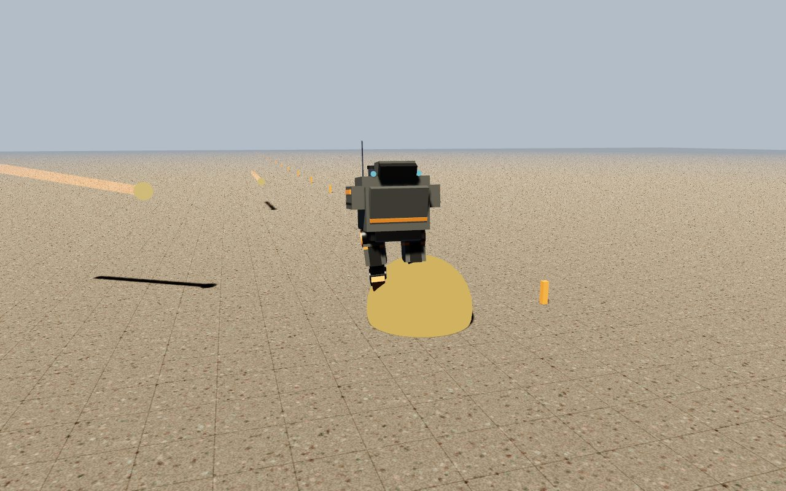
Impact range at three shots a second: two tracers inbound, a flash where one struck the left foot.
The mech's look, first pass
Each link is now dressed in parts made from primitives, laid over its collision shape and sized from it, so a longer leg gets longer plates. The torso has a cockpit with a visor, a sloped glacis, shoulder pods, a reactor pack with two stacks, and a skirt. The thighs carry armour, the hip-pitch drum and a piston to the knee. The shins have a knee cap, a shin guard and a piston, and the feet a toe cap and heel. Hull grey dominates, with orange only for stripes and caps. Two lighting fixes: with no environment map, metal surfaces in shade went black, so metalness is low throughout; and a sky fill light from the side away from the sun lights the shaded side, which the ambient term alone left near black.
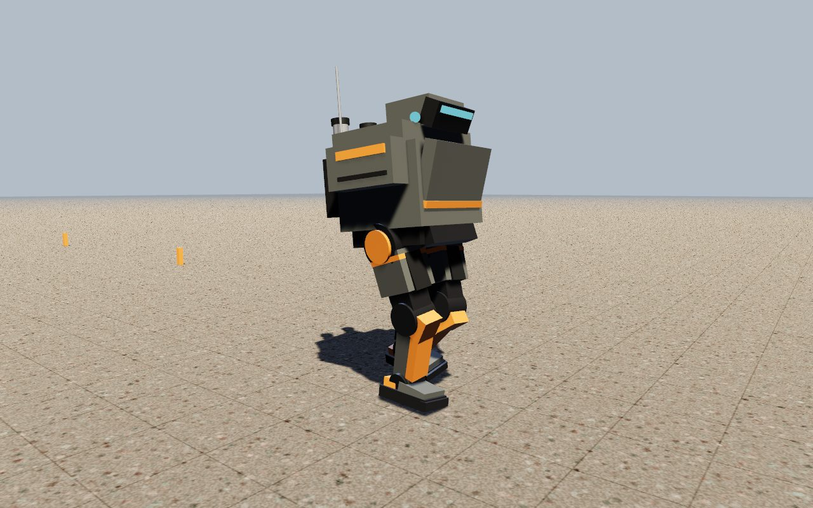
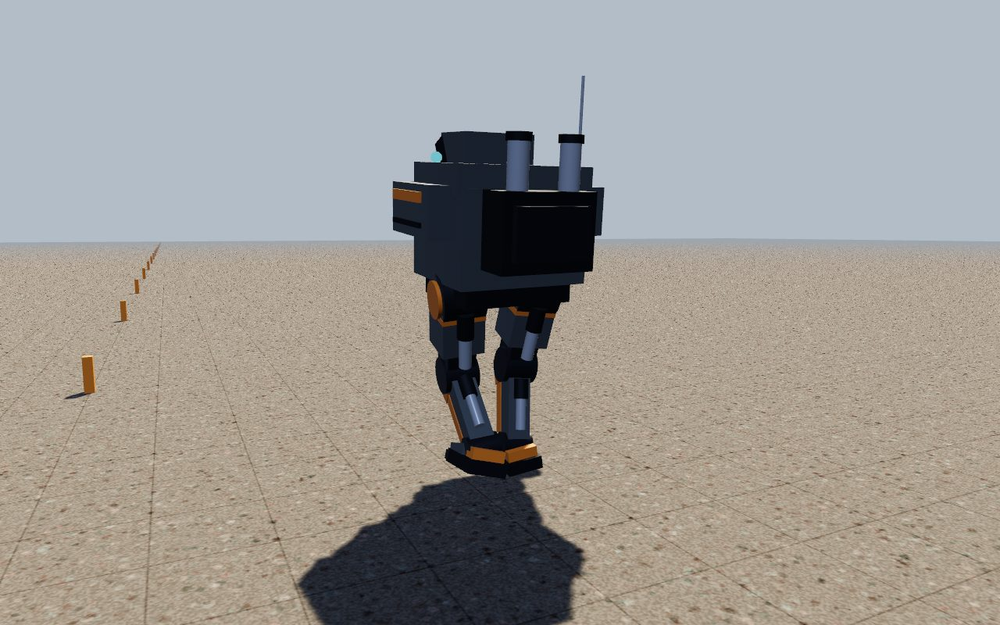
Front quarter and back. (The native client now takes --stage '{json}' and --shot out.png --after 6, so a change can be looked at without serving a build.)
Next
Evaluate teacher-v2 for smoothness, ship it, and distill estimator-v2 from it, with nominal episodes mixed in.
Decide the wider body ranges, so knowing the body pays (needs the owner).
Native vs WASM replay parity test.
M0 and the first walk: Rapier passes, the teacher trains, the browser viewer exists
Status
Piece
State
mw_sim: the mech, actuators, Rapier world, training env
The policy never crosses an engine gap: training and the browser step the same Rust simulation.
The mech
An original biped of about 4 t and 3.2 m: a torso box and two legs of six revolute joints each (hip yaw, roll and pitch, knee, ankle pitch and roll), one Rapier multibody. Every joint is a PD position controller inside a motor-and-driver model: the commanded torque becomes a current, the driver clamps it (damage lowers the clamp), the winding heats with I²R and cools to ambient, the driver derates above 90 °C and trips at 120 °C, and a weak driver faults on a sustained overload. The policy sees the motor temperatures, as a real robot's would.
Finding 1: a standing mech's feet slid
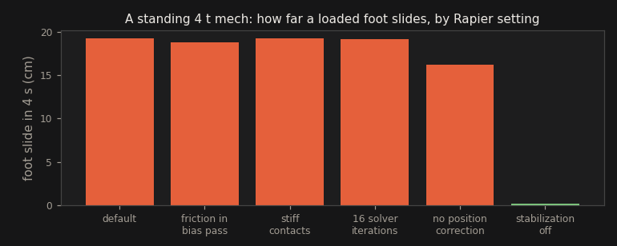
The first stand test drifted backwards and tipped. The feet were sliding about 19 cm under a 20 kN load while their bodies reported zero velocity. Friction, solver iterations and contact stiffness made no difference. Rapier's position-stabilization pass corrects ground penetration without friction, and through the mech's bent legs that correction moves the feet sideways. With it off (num_internal_stabilization_iterations = 0) the slide is 2 mm and penetration stays under 2 mm.
Two more Rapier lessons from the same day: a multibody link's reported velocity is not its real velocity (so foot slip is measured from positions), and impulses applied to a link's rigid body are lost (so a push is a force held for one physics step). The PD control uses Rapier's implicit force-based joint motor, whose torque limit the actuator model sets each step.
Finding 2: the thermal trip could never fire
With the driver derating to 30% just below the trip temperature, a motor at full demand settles under the trip point (90 W of heat against 375 W of cooling). The floor is now 70%: an overload still trips, so a policy has to lighten a hot joint's load to keep it alive, which is the limp the spec wants to emerge.
Training: teacher-v1
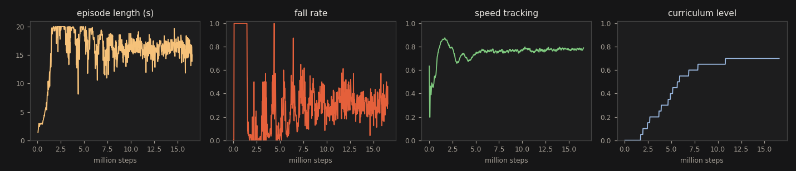
At 14M steps (about an hour, sharing the CPUs with a landing build). Full 20 s episodes and 0.85 speed tracking came within 1M steps at nominal parameters. The curriculum then widened body parameters, pushes and damage up to level 0.7, where about 30% of episodes end in a fall. It climbed on noisy fall-rate samples; the next run smooths that check.
The policy walks in Rust
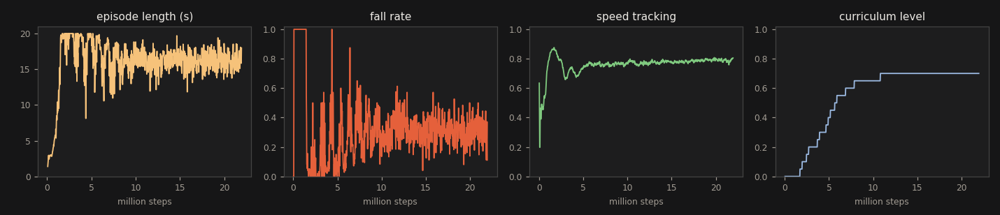
At 21M steps: falls down to 15–25% at curriculum level 0.7 (random bodies, pushes, some damage).
The 21M checkpoint run by mw_policy on mw_sim, closed loop, no Python (cargo run -p mw_policy --example eval), 8 episodes of 20 s each:
Conditions
Asked 0.5 m/s
Asked 1.0 m/s
nominal body
0/8 fell, 0.38 m/s
0/8 fell, 0.90 m/s
random bodies (mass, CoM, legs, friction, latency)
0/8 fell, 0.34 m/s
0/8 fell, 0.70 m/s
+ pushes + actuator damage
4/8 fell
6/8 fell
This checkpoint ships as the demos' first policy (assets/policies/teacher-v1.bin). The hardest conditions are where training still has work to do.
Next
See the policy walk in the browser viewer (needs the game registered and served).